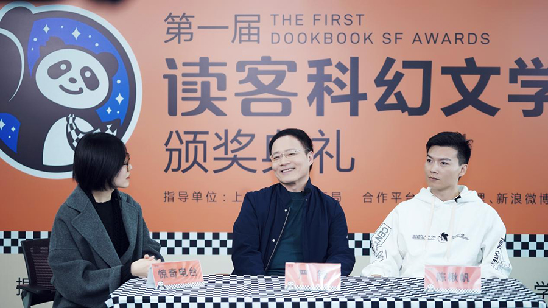

第一届“读客科幻文学奖”以“发掘中华科幻天才,共荣科幻文学未来”为使命,参加的科幻作家年龄均在18~30岁之间。在11月27日的第一届“读客科幻文学奖”颁奖典礼上,铜奖、银奖、金奖依次揭晓。
据悉,第一届“读客科幻文学奖”的参赛作品题材广泛,视野广阔,出现了反乌托邦、赛博朋克、太空歌剧等多元作品。作者们并没有陷入陈旧老套的故事模式中,充分地体现了中国Z世代青年作家的独特视角,为中国科幻的未来打开了很多可能性。
在谈及选手作品时,陈楸帆盛赞了Z世代青年们身上独具的、任何其他时代都没有的特色。他说:“和之前的作者相比,Z世代作家作品里模仿的痕迹很少,更多的是原生的、原创的、自发的内容。因为游戏、动漫,所有进步的技术手段,已经成为他们日常生活的一部分。这批作者其实是在非常科幻式的环境里成长起来的。所以他们会去思考更多前人看不到的更细腻、幽深的点,而这些点有可能更贴近于科幻的本质。

科幻是关于未来的哲学。正如第一届“读客科幻文学奖”评委严锋评价的,“他们在创作的处理方面很轻,这种轻并不是轻薄的轻,是有点像卡尔维诺那种意义上的轻。这是21世纪文学的特点,这种轻代表了有弹性,不执着,保持一种开放性,快节奏,多视角,这里面的转换可以非常自如。我觉得也可以说Z世代中国科幻作家,包括中国的作家、年轻作家,他们基本上是同步的,就是也在朝这个方向转换。”
本届“读客科幻文学奖”让中国科幻读者们看到了中国Z世代科幻创作者的风采,也看到了中国科幻的未来。正如本届读客科幻文学奖金奖的获奖作者“五月羽毛”在获奖后说的,“科幻的本质就是把科学之美从冰冷的公式中解放出来,去让每个人都可以欣赏到。我一直以来的想法也是这样,就是把一些繁杂的东西,一些冰冷的东西,把它释放出来,然后能够让更多的人去享受科幻的乐趣,能感受科幻的魅力。”